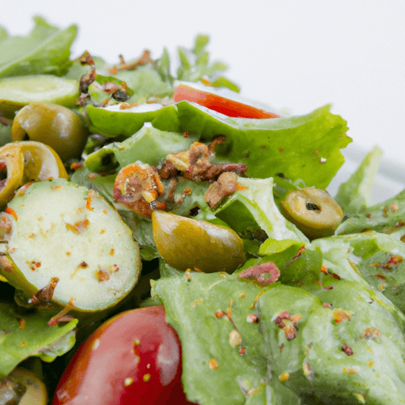

Olive Green Salad

Description
Olive Green Salad is a delicious, healthy, and refreshing salad that features a combination of greens, olives,
and other
colorful, flavorful ingredients. Here's a simple recipe to make it:
Ingredients
- 4 cups mixed salad greens (such as romaine, spinach, or arugula)
- 1 cup cherry tomatoes, halved
- 1 cucumber, sliced
- 1/2 red onion, thinly sliced
- 1/2 cup black olives, pitted
- 1/4 cup feta cheese, crumbled
- 2 tablespoons fresh lemon juice
- 2 tablespoons extra virgin olive oil
- Salt and pepper, to taste
Steps
-
In a large salad bowl, combine the mixed greens, cherry tomatoes, cucumber, red onion, black olives, and
feta cheese.
-
In a small bowl, whisk together the lemon juice, olive oil, salt, and pepper. Drizzle the dressing over the
salad and
toss gently to coat all the ingredients.
- Serve immediately and enjoy!
-
Note: You can also add grilled chicken or shrimp to make it a more filling meal. Additionally, feel free
to
customize
the salad by adding other ingredients like avocado, bell peppers, or nuts for added texture and flavor.
Website created by bderrickmatthew